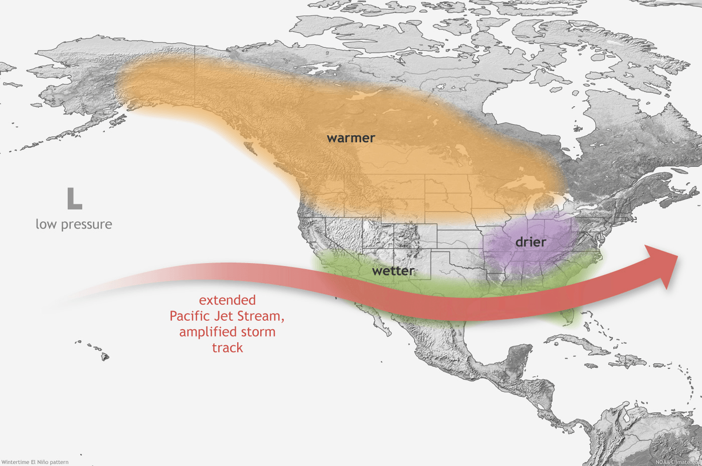
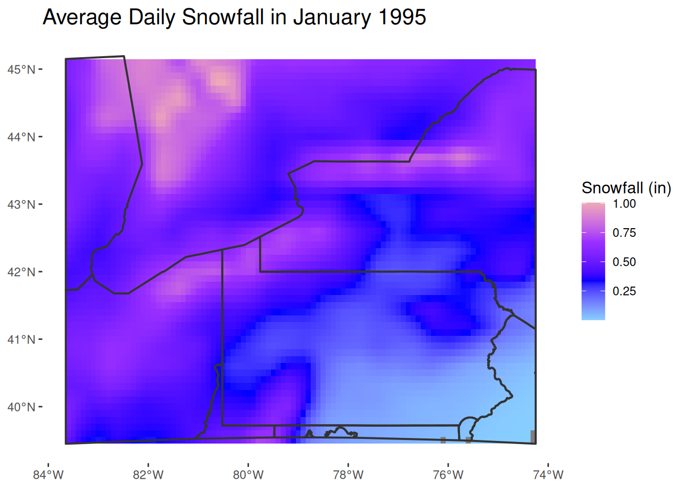
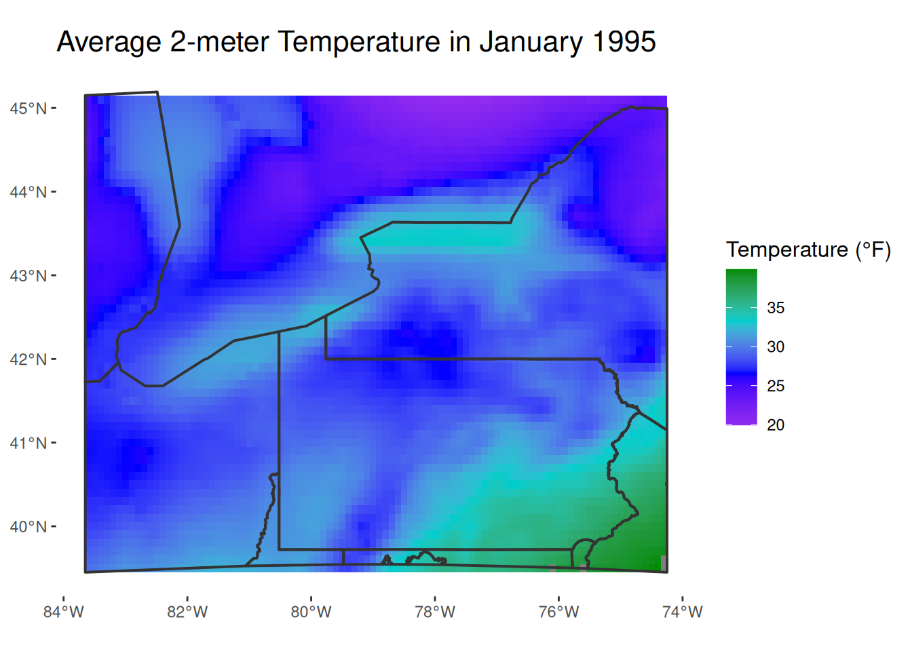
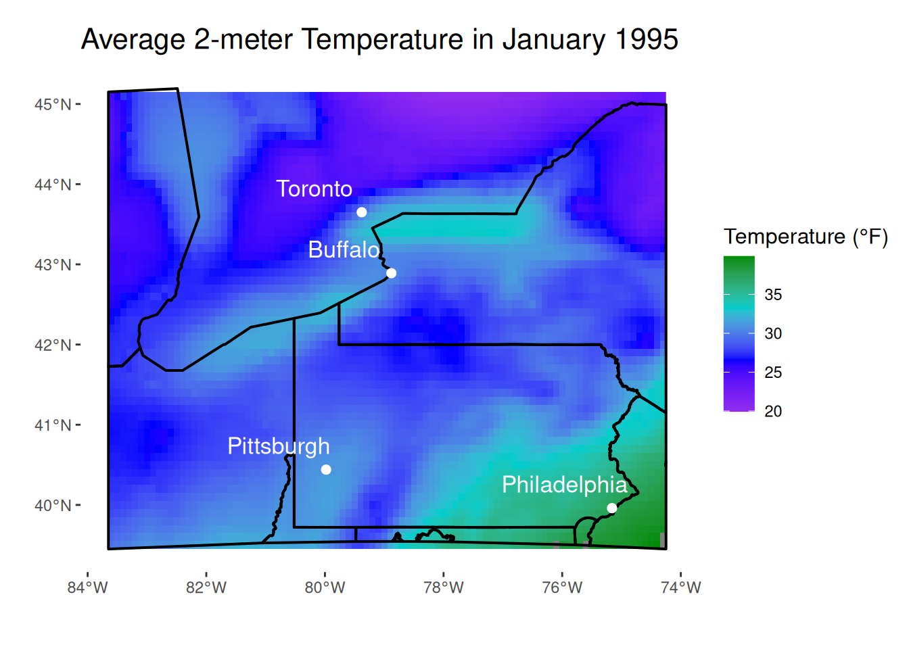

library(dplyr)
library(ggplot2)
library(ncdf4)
library(terra)
library(sf)
library(rasterVis)
library(tidyterra)
library(tigris)
library(lubridate)Northeast Winters and Large-Scale Climate Patterns
A Statistical Analysis of the effect of Climate Indices on Winter Severity
Introduction
Although long-term climate trends are not as noticeable as day-to-day weather conditions, they affect long-term patterns of day-to-day weather significantly. Several climate patterns affect the weather in the United States, with the El Niño Southern Oscillation (ENSO) cycle being the most impactful and well-known, especially in winter (NOAA, 2026). These patterns are tracked through spatial patterns of different types of variables. ENSO and most indices are dependent on sea-surface temperature patterns, while smaller-scale indices such as the North Atlantic Oscillation (NAO) are dependent on changes in air pressure. These climate indices are quantifications of climate patterns that are typically standardized, such that a normal pattern has an index value of 0 and anomalous patterns are assigned a negative or positive value. A positive ENSO phase (El Niño) typically brings wetter conditions to the Southwestern United States and warmer and drier conditions to Northeast, while a negative ENSO phase (La Niña) brings the opposite weather conditions.

Though ENSO is more significant than NAO, areas further away from the Pacific ocean may be influenced more by closer indices, such as NAO. In addition, certain combinations of indices may lead to different effects, such as the snowy winter of 2009/2010 occuring due to a negative NAO and positive ENSO combination (Seager et al., 2010). This study aims to analyze the severity of past winters in the Northeast and determine if there are any relationships between winter severity and climate indices.
Project Goals
- Determine if relationships exist between climate indices and winter weather severity
- Identify any correlation between relevant climate indices
- Determine if certain climate indices disproportionately affect areas that are prone lake effect snow
Methodology
Data Sources
Two publicly available datasets were obtained to complete required data analysis:
- Climate Indices: Monthly Atmospheric and Ocean Time Series
- ERA5 Climate Reanalysis Data
The climate index data, provided by the NOAA Physical Sciences Laboratory, provides a list of important climate indices that have been recorded monthly since 1950. Each entry on the list provides a link to a standalone table with each recorded index value as an entry. Columns organize the values by month, while rows represent years.
Four different indices were pulled from this website to represent the four corners of the contiguous United States:
- Tropical North Atlantic Index (TNA)
- North Atlantic Oscillation (NAO)
- Pacific North American Pattern (PNA)
- Pacific Oscillation Index (SOI)
The ERA5 Climate Reanalysis data is available through the Climate Data Store from the European Centre for Medium Range Weather Forecasts (ECMWF). Although this dataset is publicly available, registration for a free account is required to download data. All reanalysis data from the Climate Data Store was derived from the ECMWF weather model, which was used to interpret and model past observational weather conditions.
ERA5 Data that was downloaded for this study are for two weather variables, average two-meter air temperature and average snowfall. In order to match the temporal resolution of the climate indices, the variables chosen were monthly averages, calculated over daily averages. The past thirty winters were selected for this analysis, including years from 1995 to 2026 and the months of November, December, January, and February. The downloaded data was contained in one netCDF file, and each raster has a spatial resolution of 0.1°× 0.1°. The extent of each raster was specified to be between longitudes -84°W and -74°W and between latitudes 39°N and 45°N to cover the study area.
R Methods
Getting Started
All required packages were loaded into the work space. ncdf4,rasterVis,tidyterra, and tigris needed to be intsalled first before being loaded in.
The four climate index datasets found online were copied directly into .txt files. Each file was then read into R using read.csv() and loaded in as distinct objects with the correct column names.
nao.raw<-read.csv(file="data/NAO_index.txt",
sep="",
col.names = c("Year",month.name[]),
header=TRUE)
soi.raw<-read.csv(file="data/SOI_index.txt",
sep = "",
header=TRUE,
col.names = c("Year",month.name[]))
pna.raw<-read.csv(file="data/PNA_index.txt",
sep = "",
header=TRUE,
col.names = c("Year",month.name[]))
tna.raw<-read.csv(file="data/TNA_index.txt",
sep = "",
header=TRUE,
col.names = c("Year",month.name[]))The metadata fron the downloaded netCDF file was examined using nc_open() to look for the correct sub-directory names that distinguish the snowfall and temperature rasters. Both sets of files were then converted into rasters using the sub-directory information.
#nc_open("data/8f41d76f03dd447542e37b1129c926.nc")
snowfall_rasters<-rast("data/8f41d76f03dd447542e37b1129c926.nc",subds="sf")
temp_rasters<-rast("data/8f41d76f03dd447542e37b1129c926.nc",subds="t2m")The metadata also reveals that the 2-meter temperature rasters are in Kelvin (K) and the snowfall rasters are in meters (m) of liquid water. Using basic arithmetic, the temperature rasters were converted into degrees Fahrenheit and the snowfall rasters were converted into inches of snow, assuming a 10:1 snow ratio where 1 inch of liquid water is equal to 10 inches of snow. The 10:1 snow ratio is typically used by meteorologists in most snow forecasts (Roebber et al., 2003).
temp_rasters_f<-(temp_rasters-273.15)*(9/5)+32
snowfall_rasters_in<-snowfall_rasters*(100/2.54)*10states() from the tigris package was used to create state boundaries to establish a frame-of-reference for the both rasters. This polygon feature includes the entire United States and territories, so it was clipped to the a polygon representing the bounding box of the rasters.
states<-states()
state.trans<-st_transform(states,crs=st_crs(snowfall_rasters))
state.trans<-state.trans$geometry
bbox_raster<-st_as_sfc(st_bbox(snowfall_rasters))
state_bounds<-st_intersection(bbox_raster,state.trans)Both the snowfall and temperature rasters were then plotted using ggplot() with the new states shapefile for January 1995, the first date available in the netCDF files.
ggplot()+geom_spatraster(data=snowfall_rasters_in$sf_1)+
geom_sf(data=state_bounds,fill=NA,lwd=0.7,color="grey20")+
labs(title = "Average Daily Snowfall in January 1995")+
scale_fill_continuous(name="Snowfall (in)",
palette = c("skyblue1","blue","purple1","pink2"))+
theme(
panel.background = element_blank(),
plot.title = element_text(size=16),
legend.title = element_text(size=12)
)
ggplot()+geom_spatraster(data=temp_rasters_f$t2m_1)+
geom_sf(data=state_bounds,fill=NA,lwd=0.7,color="grey20")+
labs(title = "Average 2-meter Temperature in January 1995")+
scale_fill_continuous(name="Temperature (°F)",
palette = c("purple2","blue","cyan3","green4"))+
theme(
panel.background = element_blank(),
plot.title = element_text(size=16),
legend.title = element_text(size=12)
)
Four cities were chosen to represent different areas of the Northeast:
- Buffalo, New York
- Toronto, Ontario
- Pittsburgh, Pennsylvania
- Philadelphia, Pennsylvania
Although Buffalo and Toronto are in geographic proximity to each other, they were chosen as Buffalo often receives significant lake effect snow, where Toronto does not. Differences in snowfall between both cities would then mostly be attributed to lake-effect snow events.
The cities and their coordinates were created as vectors, which were then combined into a spatial data frame. This dataframe was transformed to match the coordinate system of the netCDF rasters, WGS 84.
buffalo<-c("Buffalo",-78.88,42.89)
toronto<-c("Toronto",-79.38,43.65)
pittsburgh<-c("Pittsburgh",-79.98,40.44)
philadelphia<-c("Philadelphia", -75.16,39.96)
cities<-cbind(buffalo,toronto,pittsburgh,philadelphia)
cities.df<-data.frame(t(cities))
colnames(cities.df)<-c("City","lon","lat")
cities.sf<-st_as_sf(cities.df,coords=c("lon","lat"),crs=4326)
cities.sf<-st_transform(cities.sf,st_crs(snowfall_rasters))To ensure the cities are in their correct locations, the spatial object was plotted on top of the temperature raster previously created.
ggplot()+geom_spatraster(data=temp_rasters_f$t2m_1)+
geom_sf(data=state_bounds,fill=NA,lwd=0.7,color="black")+
geom_sf(data=cities.sf,size=2,color="white")+
geom_sf_text(data=cities.sf,
aes(label = City),
position = position_nudge(x=-0.8,y=.3),
size=4.5,
color="white")+
labs(title = "Average 2-meter Temperature in January 1995",x="",y="")+
scale_fill_continuous(name="Temperature (°F)",
palette = c("purple2","blue","cyan3","green4"))+
theme(
panel.background = element_blank(),
plot.title = element_text(size=16),
legend.title = element_text(size=12),
)
Weather Data Extraction and Formatting
Temperature and snowfall values were extracted from each raster at the locations of the four cities, from January 1995 to February 2026 and put into tables. City names were re-added to each table, retaining the order of the cities that were used to extract raster values to ensure that values were assigned to the correct city names.
extract_temps<-extract(temp_rasters_f,cities.sf,df=TRUE)
extract_temps<-extract_temps|>
select(!ID)
extract_temps<-t(extract_temps)
colnames(extract_temps)<-c("Buffalo","Toronto","Pittsburgh","Philadelphia")
extract_snow<-extract(snowfall_rasters_in,cities.sf,df=TRUE)
extract_snow<-extract_snow|>
select(!ID)
extract_snow<-t(extract_snow)
colnames(extract_snow)<-c("Buffalo","Toronto","Pittsburgh","Philadelphia")When the temperate, snowfall, and climate index tables are eventually joined, they must be joined by the date. The weather tables have no dates assigned and are instead classified by raster number, from 1 to 126. As the rasters contain data from 1995 to 2026 and only include the months of January, February, November, and December, numeric year and month columns were created carefully using the rep() function, with the last two dates requiring manual entries for the 2026 data, since only January and February data were available as of November 2026.
years=c(rep(1995:2025,each=4),2026,2026)
months=c(rep(c(1,2,11,12),times=31),1,2)These new columns were then appended to the temperature and snowfall datasets. Using tidyverse functions, the snowfall and temperature values were converted from characters to numeric value types. A new column, “date”, was created using the make_date() function using values from the month and year columns in order to establish comparable date values for plotting purposes.
temp_dates<-cbind(extract_temps,years,months)
temp_dates.df<-data.frame(temp_dates)
temp_dates.df<-temp_dates.df|>
mutate(
Buffalo=as.numeric(Buffalo),
Toronto=as.numeric(Toronto),
Pittsburgh=as.numeric(Pittsburgh),
Philadelphia=as.numeric(Pittsburgh),
date=make_date(year=years,month=months)
)
snow_dates<-cbind(extract_snow,years,months)
snow_dates.df<-data.frame(snow_dates)
snow_dates.df<-snow_dates.df|>
mutate(
Buffalo=as.numeric(Buffalo),
Toronto=as.numeric(Toronto),
Pittsburgh=as.numeric(Pittsburgh),
Philadelphia=as.numeric(Philadelphia),
date=make_date(year=years,month=months)
)The snowfall values were converted from using average daily snowfall to average monthly snowfall by multiplying the snow values by the number of days in a given month using dplyr functions.
snow_dates_tot.df<-snow_dates.df|>
mutate(
Buffalo=case_when(
months==1 | months==12~Buffalo*31,
months==11~Buffalo*30,
months==2~Buffalo*28
),
Toronto=case_when(
months==1 | months==12~Toronto*31,
months==11~Toronto*30,
months==2~Toronto*28
),
Pittsburgh=case_when(
months==1 | months==12~Pittsburgh*31,
months==11~Pittsburgh*30,
months==2~Pittsburgh*28
),
Philadelphia=case_when(
months==1 | months==12~Philadelphia*31,
months==11~Philadelphia*30,
months==2~Philadelphia*28
)
)Climate Index Data Formatting
The dplyr function pivot_longer() was used to transform each climate index table so each new table contains a singular for month, instead of twelve separate columns. These tables were then filtered to only include years from 1995 to 2026 and months in winter. A new column was created to contain a numeric representation of the month column which was used in conjunction with the year column to generate the same date column used preciously in the weather data tables. The old month and year columns were then dropped to prevent duplicate columns when joining with other tables.
Only the transformation of the NAO table is shown here, as the code is identical to the other three indicies.
nao.raw<-nao.raw|>
filter(Year>=1995)
nao<-pivot_longer(nao.raw,
cols = month.name[],
values_to = "nao_index",
names_to = "month")
nao<-nao|>
filter(month=="January"
|month=="February"
|month=="November"&Year<2026
|month=="December"&Year<2026)|>
mutate(
monthcode=case_when(
month=="January"~1,
month=="February"~2,
month=="November"~11,
month=="December"~12
)
)
nao.date<-nao|>
mutate(
date=make_date(year = Year,month = monthcode)
)
nao.date.clean<-nao.date|>
select(date,nao_index)Table Joining
The index tables were first joined together by the date column using the inner_join() to create a singular table with all indices.
soi.tna<-inner_join(soi.date.clean,tna.date.clean,join_by(date))
nao.pna<-inner_join(nao.date.clean,pna.date.clean,join_by(date))
indices<-inner_join(soi.tna,nao.pna,join_by(date))The snow and temperature datsets have city names assigned to their respective data, and are therefore exactly the same across both datasets. If joined, there would be no distinction betweem the snow and temperature values. To fix this, those columns were renamed with weather variable designations. Only the newly renamed columns and the date column were kept, but the month and year columns were still retained in the snowfall dataset in order to group the data by year or month.
snow.clean<-snow_dates_tot.df|>
mutate(
Buffalo_snow=Buffalo,
Toronto_snow=Toronto,
Pittsburgh_snow=Pittsburgh,
Philadelphia_snow=Philadelphia
)|>
select(date,Buffalo_snow,Toronto_snow,Pittsburgh_snow,Philadelphia_snow)
temp.clean<-temp_dates.df|>
mutate(
Buffalo_temp=Buffalo,
Toronto_temp=Toronto,
Pittsburgh_temp=Pittsburgh,
Philadelphia_temp=Philadelphia
)
temp.clean<-temp.clean|>
select(Buffalo_temp,Toronto_temp,Pittsburgh_temp,Philadelphia_temp,date,months,years)The weather variables were then joined together, followed by the weather variables and the climate indices to form a complete table.
weather<-inner_join(snow.clean,temp.clean,join_by(date))
complete_table<-inner_join(weather,indices,join_by(date))Results
summary_table<-complete_table|>
mutate(
period=case_when(
years<=1999~"1995-1999",
years>=2000 & years<=2004~"2000-2004",
years>=2005 & years<=2009~"2005-2009",
years>=2010 & years<=2014~"2010-2014",
years>=2015 & years<=2019~"2015-2019",
years>=2020 & years<=2026~"2020-2026"
)
)|>
group_by(period)|>
summarise(Buffalo_Snow=mean(Buffalo_snow),
Toronto_Snow = mean(Toronto_snow),
Pittsburgh_Snow=mean(Pittsburgh_snow),
Philadelphia_Snow=mean(Philadelphia_snow))
knitr::kable(tibble(summary_table),caption="Average 4-Month Monthly Snowfall")| period | Buffalo_Snow | Toronto_Snow | Pittsburgh_Snow | Philadelphia_Snow |
|---|---|---|---|---|
| 1995-1999 | 12.15191 | 10.208120 | 7.325653 | 4.238588 |
| 2000-2004 | 12.58296 | 9.778742 | 7.888589 | 7.313673 |
| 2005-2009 | 13.65687 | 12.219167 | 7.261057 | 4.891552 |
| 2010-2014 | 13.20700 | 10.485712 | 9.266674 | 8.202834 |
| 2015-2019 | 13.25452 | 10.359383 | 7.775580 | 5.348803 |
| 2020-2026 | 12.08860 | 10.617719 | 6.429652 | 4.361217 |
Conclusions
References
National Oceanic And Atmospheric Administration. (2026). Understanding El Niño and ENSO. https://www.noaa.gov/understanding-el-nino
Roebber, P. J., Bruening, S. L., Schultz, D. M., & Cortinas , J. V., Jr. (2003). Improving Snowfall Forecasting by Diagnosing Snow Density. Weather and Forecasting, 18(2), 264-287. https://doi.org/10.1175/1520-0434(2003)018<0264:ISFBDS2.0.CO;2>
Seager, R., Y. Kushnir, J. Nakamura, M. Ting, and N. Naik. (2010). Northern Hemisphere winter snow anomalies: ENSO, NAO and the winter of 2009/10. Geophys. Res. Lett., 37(14), Article L14703.https://doi.org/10.1029/2010GL043830